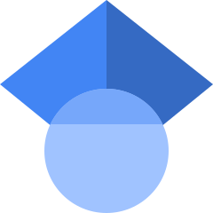

I am a Ph.D. student in Information and Systems Engineering at the NSERC/Ericsson Industrial Research Chair in SDN/NFV Security, Concordia University, Montreal, where I am supervised by Dr. Lingyu Wang and Dr. Suryadipta Majumdar. I obtained my M.A.Sc in Information Systems Security from Concordia University, Montreal. Previously, I studied embedded systems, hardware acceleration and electronics at IMT Atlantique, France. I am also interested in ML and neural networks. Currently, my research interests include containers security, 5G security, cloud-computing, network function virtualization (NFV) and OS security.
